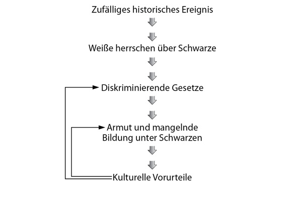

Kapitel 8
Die Geschichte ist nicht gerecht
Im Grunde dreht sich die Geschichte der Menschheit nach der landwirtschaftlichen Revolution um eine einzige Frage: Wie organisierten die Menschen ihr Zusammenleben in großen Gruppen, obwohl ihnen jeglicher biologischer Instinkt dazu abging? Die Antworten der Menschen auf dieses Problem waren die erfundenen Ordnungen und die Schrift. Diese beiden Errungenschaften schlossen die Lücke in unserem biologischen Erbe.
Doch die Erfindung der Massenkooperation war nicht für alle Menschen ein Segen. Die Gesellschaften, die daraus hervorgingen, waren nämlich weder neutral noch gerecht. Sie stellten Hierarchien auf und teilten die Menschen in Gruppen und Schichten ein, von denen einige Privilegien und Macht genossen, während andere diskriminiert und unterdrückt wurden. Hammurabis Gesetze teilten die Menschen beispielsweise in Freigeborene, Gemeine und Sklaven ein. Die Freigeborenen wurden mit den Annehmlichkeiten des Lebens überschüttet, die Gemeinen bekamen, was übrig blieb, und die Sklaven gingen leer aus.
Auch die Ordnung, wie sie die englischen Siedler in Nordamerika im Jahr 1776 erfanden, teilte die Menschen in Hierarchien ein, auch wenn sie noch so sehr auf der Gleichheit der Menschen pochte. Männer profitierten von der Ordnung, Frauen gingen leer aus. »Weiße« kamen in den Genuss der Rechte, »Schwarze« und »Indianer« wurden diskriminiert und unterdrückt. Viele Unterzeichner der Unabhängigkeitserklärung waren selbst Sklavenhalter. Es kam ihnen nicht als Heuchelei vor, dass sie ihre Sklaven nach der Unterzeichnung der Erklärung nicht freiließen. Ihrer Ansicht nach waren Sklaven nämlich gar keine Menschen, weshalb die Menschenrechte auch nicht auf sie zutrafen.
Außerdem schufen die Amerikaner eine Hierarchie zwischen Arm und Reich. Die meisten hatten kein Problem mit der wirtschaftlichen Form der Ungleichheit. Für sie bedeutete Gleichheit lediglich, dass für Arme und Reiche dieselben Gesetze galten. Mit Arbeitslosenunterstützung, gleichen Bildungschancen und medizinischer Versorgung für alle hatten sie nichts am Hut. Auch das Wort »Freiheit« hatte damals eine etwas andere Bedeutung als heute. Im Jahr 1776 bedeutete das Wort nicht, dass unterdrückte Gruppen (Schwarze, Ureinwohner, oder – Gott behüte! – Frauen) an der Macht beteiligt werden sollten. Es bedeutete lediglich, dass der Staat seine Nase nicht in die Angelegenheiten seiner Bürger steckte und die Finger von ihrem Eigentum ließ. Die amerikanische Ordnung erhielt also eine Hierarchie von Arm und Reicht aufrecht, die ihrer Ansicht nach den ewigen Gesetzen Gottes oder der Natur entsprach. Die Fleißigen wurden von diesen Gesetzen belohnt und die Faulen bestraft.
Die Hierarchien zwischen Freien und Sklaven, Weißen und Sklaven, Reichen und Armen basierten auf Fiktionen. (Auf die Hierarchie zwischen Mann und Frau kommen wir gleich noch zu sprechen.) Es ist jedoch eine eherne Regel der Geschichte, dass jede erfundene Hierarchie leugnet, dass es sich nur um eine Erfindung handelt, und sich als natürliche und unvermeidliche Ordnung der Dinge ausgibt. Die Befürworter der Hierarchie zwischen Freien und Sklaven behaupteten beispielsweise immer wieder, die Sklaverei sei keine menschliche Erfindung. Für Hammurabi war sie Teil der göttlichen Ordnung. Aristoteles behauptete, Sklaven hätten eine »Sklavennatur« und Freie eine »freie Natur«. Ihre gesellschaftliche Stellung sei lediglich ein Ausdruck ihrer wahren Natur.
Rassisten haben immer wieder behauptet, die »Überlegenheit der weißen Rasse« sei eine biologische Tatsache. Weiße seien überlegen, weil sie von Natur aus intelligenter, moralischer und fleißiger seien. Andere argumentieren, Reiche seien den Armen überlegen, weil es objektive Unterschiede bei den Fähigkeiten gebe. Die Reichen seien kompetenter und verdienten daher eine lange Liste von Privilegien, angefangen von einer umfassenderen medizinischen Versorgung über eine bessere Bildung bis hin zu einer vielseitigeren Ernährung.
Gläubige Hindus behaupten, die Hierarchie des Kastenwesens sei von kosmischen Kräften geschaffen worden. Nach dem berühmten Schöpfungsmythos der Hindus schufen die Götter die Welt aus dem Körper eines Urwesens namens Purusa. Die Sonne wurde als Purusas Auge geschaffen, der Mond aus Purusas Gehirn, die Brahmanen (die Priesterkaste) aus seinem Mund, die Kshatriyas (die Kriegerkaste) aus seinen Armen, die Vaishyas (Bauern und Händler) aus den Hüften und die Shudras (Diener) aus den Beinen. Für jemanden, der diese Erklärung glaubt, sind die Unterschiede zwischen Brahmanen und Dienern genauso natürlich wie die zwischen Sonne und Mond.49 Die alten Chinesen glaubten, als die Göttin Nü Wa die Menschen aus der Erde erschuf, formte sie die Aristokraten aus feiner gelber Erde und die Bauern aus braunem Lehm.50
Diese Hierarchien entspringen durchweg der menschlichen Fantasie. Natürlich wurden Brahmanen und Sklaven nicht von Göttern aus den verschiedenen Körperteilen eines Urwesens geformt; stattdessen waren es Gesetze und Normen, die Menschen vor rund dreitausend Jahren in Nordindien erfanden. Und es gibt auch keine biologischen Unterschiede zwischen Sklaven und Freien, wie Aristoteles behauptet; vielmehr waren es menschliche Gesetze und Normen, die Menschen zu Sklaven und Herren machten. Und zwischen Schwarzen und Weißen gibt es zwar biologische Unterschiede wie Hautfarbe und Haartyp, aber diese haben nichts mit Intelligenz oder Moral zu tun.
Wir behaupten gern, andere Gesellschaften hätten unnatürliche und lächerliche Hierarchien, während unser Hierarchie natürlich und gerecht sei. So haben wir inzwischen gelernt, dass keine Rasse einer anderen überlegen ist, und entrüsten uns über Gesetze, die es Angehörigen einer bestimmten ethnischen Gruppe verbieten, in denselben Stadtteilen zu leben, ihre Kinder an dieselben Schulen zu schicken oder dieselben Krankenhäuser aufzusuchen wie die anderen. Doch die Hierarchie von Arm und Reich, die es Reichen erlaubt, in vornehmeren Stadtteilen zu leben, ihre Kinder auf bessere Schulen zu schicken oder modernere Krankenhäuser aufzusuchen wie Arme, scheint uns vollkommen normal. Und das, obwohl die meisten Reichen nur deshalb reich sind, weil sie in eine reiche Familie geboren wurden, und die meisten Armen nur deshalb ein Leben lang arm bleiben, weil sie aus einer armen Familie stammen.
*
Man bekommt beinahe den Eindruck, als bräuchte eine komplexe Gesellschaft Hierarchien und Diskriminierung. Aus moralischer Sicht sind nicht alle Hierarchien gleich, und in manchen Gesellschaften hat die Diskriminierung schrecklichere Formen angenommen als in anderen, doch Wissenschaftler haben bislang keine größeren Gesellschaften gefunden, die ohne Hierarchien ausgekommen wären. Immer wieder stellten die Menschen gesellschaftliche Ordnungen auf, indem sie sich selbst in frei erfundene Kategorien wie Freigeborene, Gemeine und Sklaven; Schwarze und Weiße; Patrizier und Plebejer; Brahmanen und Shudras; Arme und Reiche einteilten. Kategorien wie diese bestimmen die Beziehungen zwischen Millionen von Menschen und sorgen dafür, dass ein Teil der Bevölkerung rechtlich, politisch und gesellschaftlich über einem anderen steht.
Hierarchien übernehmen eine wichtige Funktion. Mit ihrer Hilfe wissen wildfremde Menschen, wie sie einander zu behandeln haben, ohne sich erst lange und umständlich bekannt machen zu müssen. In Bernhard Shaws Pygmalion muss der reiche Henry Higgins keine intime Bekanntschaft mit der armen Eliza Doolittle pflegen, um zu wissen, wie er sich ihr gegenüber zu verhalten hat. Sobald sie den Mund aufmacht, weiß er, dass sie der Unterschicht angehört und er mit ihr tun kann, was er will – zum Beispiel eine Wette abschließen, dass er dieses Blumenmädchen in eine Herzogin verwandeln könne, wenn er ihr beibringt, wie eine feine Dame zu sprechen. Und eine moderne Eliza muss wissen, wie sehr sie sich um jeden der vielen Kunden bemüht, die ihren Blumenladen betreten. Sie kann nicht lange Erkundigungen über die Vorlieben und wirtschaftlichen Verhältnisse ihrer Kunden einholen. Vielmehr nutzt sie soziale Signale wie Kleidung und Alter, um einen Anwalt, der zwei Dutzend langstielige Rosen für seine Mutter kauft, von einem Bürogehilfen zu unterscheiden, der einer Sekretärin mit einem netten Lächeln ein paar Gänseblümchen schenken will.
Tatsächlich spielen auch natürliche Eigenschaften eine Rolle bei der Entstehung sozialer Unterschiede. Diese werden jedoch immer durch erfundene Hierarchien vermittelt, und zwar auf zweierlei Weise. Erstens müssen die meisten Fähigkeiten gefördert und entwickelt werden. Selbst wenn jemand mit einem bestimmten Talent zur Welt kommt, bleibt es ungenutzt, wenn es nicht entwickelt wird. Aber nicht alle bekommen diese Chance: Ob jemand gefördert wird oder nicht, hängt in der Regel von seiner Position in der erfundenen Hierarchie ab. Harry Potter ist ein gutes Beispiel: Da er nach seiner Geburt von seinen Eltern, zwei angesehenen Magiern, getrennt und von ahnungslosen Muggles aufgezogen wird, kommt er in der Hogwarts-Schule für Hexerei und Zauberei an, ohne auch nur die geringste Ahnung von Magie zu haben. Er braucht ganze sieben Bücher, um seine einmaligen Fähigkeiten zu entwickeln.
Und zweitens, selbst wenn Menschen aus verschiedenen Schichten exakt dieselben Fähigkeiten entwickeln, haben sie trotzdem nicht dieselbe Aussicht auf Erfolg. Wenn in der britischen Kolonie Indien ein Unberührbarer, ein Brahmane, ein katholischer Ire oder ein protestantischer Engländer exakt dasselbe unternehmerische Talent entwickelt hätten, dann hätten sie trotzdem nicht dieselbe Chance auf wirtschaftlichen Erfolg und persönlichen Reichtum gehabt. Gesetze und gläserne Decken hätten dafür gesorgt, dass die Karten von vorneherein nicht gleich verteilt sind.
Ein Teufelskreis
Alle Gesellschaften basieren auf erfundenen Hierarchien, doch diese Hierarchien können sehr unterschiedlich aussehen. Woher kommt das? Warum teilte die indische Gesellschaft die Menschen nach Kasten ein, die ottomanische Gesellschaft nach Religionen und die amerikanische Gesellschaft nach Hautfarbe? In den meisten Fällen war der Grund eine willkürliche historische Verwerfung, die im Laufe der Generationen zu einem Graben wurde, weil bestimmte Gruppen ein Interesse daran hatten.
Das indische Kastensystem wurde zum Beispiel erfunden, als vor dreitausend Jahren arische Stämme nach Nordindien vordrangen und die einheimische Bevölkerung unterwarfen. Die Eindringlinge errichteten eine hierarchische Gesellschaftsordnung, in der sie als Priester und Krieger oben standen und die Einheimischen als Diener und Sklaven ganz unten. Da die zahlenmäßig unterlegenen Neuankömmlinge befürchteten, ihre Macht und Identität zu verlieren, erfanden sie das Kastenwesen. Sie teilten alle Menschen in verschiedene Gruppen mit eigenen Berufen, Gesetzen, Privilegien und Pflichten ein. Eine Vermischung der Kasten wurde durch strenge Regeln und Normen verboten, die Angehörigen der verschiedenen Kasten mussten getrennt leben, essen und feiern. Vor allem durften sie nicht untereinander heiraten.
Die Herrschenden erklärten, das Kastenwesen, das vor allem über religiöse Tabus funktionierte, sei nicht etwa ein Zufallsprodukt der Geschichte, sondern spiegele ewige kosmische Wahrheiten wider. Die Kategorien »Reinheit« und »Unreinheit« spielten im Hinduismus eine zentrale Rolle, und sie mussten nun als Fundament der gesellschaftlichen Pyramide herhalten. Fromme Hindus lernten, dass die Vermischung der Kasten nicht nur sie verunreinige, sondern die gesamte Gesellschaft. Das ist keine typisch hinduistische Vorstellung. Zu allen Zeiten und in fast allen Gesellschaften erwies sich die Vorstellung von Reinheit und Unreinheit als das wirkungsvollste Mittel zur Durchsetzung gesellschaftlicher und politischer Schranken. Die Furcht vor der »Unreinheit« ist in unseren biologischen Überlebensinstinkten verwurzelt und schützt uns vor potenziellen Krankheitsherden. Wer eine Gruppe – seien es Frauen, Juden, Homosexuelle oder Schwarze – vom Rest der Gesellschaft isolieren möchte, erzielt die größte Wirkung, wenn er alle anderen überzeugt, dass diese Gruppe »unrein« ist.
Das Kastensystem und seine Reinheitsgebote verwurzelten sich tief in der indischen Kultur. Nachdem die arische Einwanderung längst vergessen war, glaubten die Inder nach wie vor an das Kastenwesen und fürchteten sich vor Verunreinigung durch eine Vermischung der Kasten. Das System war keineswegs starr, im Gegenteil, im Laufe der Zeit spalteten sich große Kasten in immer neue Unterkasten auf. Aus den ursprünglichen vier wurden schließlich mehr als dreitausend Kasten namens jati (wörtlich »Geburt«). Diese Vermehrung der Kasten änderte nichts am Grundprinzip, nach dem jeder Mensch in eine bestimmte Position geboren wird und jeder Verstoß gegen die Regeln den Einzelnen und die Gesellschaft verunreinigt. Die Kaste bestimmt, welchen Beruf jemand ergreift, was er isst, wo er lebt und wen er heiraten kann. In der Regel können Hindus nur innerhalb ihrer Kaste heiraten und vererben ihren Status an ihre Kinder weiter.
Wann immer eine neue Berufsgruppe entstand oder eine neue gesellschaftliche Gruppierung auftauchte, musste sie als Kaste anerkannt werden, um einen rechtmäßigen Platz in der Gesellschaft einnehmen zu können. Gruppen, die nicht als eigene Kaste anerkannt wurden, wurden dagegen von der Gesellschaft ausgeschlossen. Bis heute müssen diese »Unberührbaren« abseits der Gesellschaft leben, die schmutzigsten Arbeiten übernehmen und zum Beispiel den Müll nach Verwertbarem durchsuchen. Selbst die Angehörigen der untersten Kasten vermeiden es, sich mit ihnen zu vermischen, mit ihnen zu essen, sie zu berühren oder gar, sie zu heiraten. Im modernen Indien werden Heirat und Beruf nach wie vor stark vom Kastenwesen geprägt, trotz aller Versuche der demokratischen Regierung des Landes, das System aufzubrechen und die Hindus zu überzeugen, dass sie durch eine Vermischung der Kasten nicht verunreinigt würden.51
Reinheit in Amerika
Auf dem amerikanischen Doppelkontinent wurde die Rassenhierarchie durch einen ähnlichen Teufelskreis aufrechterhalten. Vom 16. bis ins 18. Jahrhundert importierten europäische Eroberer Millionen afrikanischer Sklaven, die in Bergwerken und Plantagen zur Arbeit gezwungen wurden. Dass sie Sklaven aus Afrika brachten und nicht aus Europa oder Ostasien, hat vor allem drei Gründe.
Erstens lag Afrika näher und es war billiger, Arbeitskräfte aus dem Senegal zu importieren als zum Beispiel aus Vietnam.
Zweitens gab es in Afrika bereits einen gut organisierten Sklavenhandel, der Menschen aus Schwarzafrika in den Nahen Osten verschleppte, während die Sklaverei in Europa relativ selten war. Es war einfacher, auf einem bestehenden Markt einzukaufen, als einen neuen zu schaffen.
Und drittens wurden die Plantagen in den Vereinigten Staaten, Haiti und Brasilien von Krankheiten wie Malaria und Gelbfieber heimgesucht, die ursprünglich aus Afrika kamen. Afrikaner hatten über viele Generationen hinweg eine teilweise Immunität gegen diese Krankheiten entwickelt, während Europäer in Scharen dahingerafft wurden. Für einen Plantagenbesitzer war es also wirtschaftlich sinnvoller, afrikanische Sklaven zu kaufen, statt europäische Schuldsklaven. Paradoxerweise wurde so die biologische Überlegenheit der Afrikaner Ausgangspunkt für ihre gesellschaftliche Unterlegenheit: Gerade weil die Afrikaner besser an die tropischen Klimate angepasst waren als die Europäer, wurden sie zu Sklaven der europäischen Herren! Aufgrund dieser drei willkürlichen Faktoren spalteten sich die neuen Gesellschaften des amerikanischen Doppelkontinents in eine herrschende Gruppe von »weißen« Europäern und eine unterdrückte Gruppe von »schwarzen« Afrikanern.
Natürlich gibt niemand gern zu, dass er Sklaven einer bestimmten Hautfarbe und Herkunft nur hält, weil ihm dies wirtschaftliche Vorteile bringt. Wie die arischen Eroberer Indiens wollten die weißen Amerikaner gern als fromme und gerechte Menschen dastehen. Daher bemühten sie religiöse und pseudowissenschaftliche Mythen, um die neue Ordnung zu rechtfertigen. Theologen behaupteten zum Beispiel, die Schwarzafrikaner seien Nachkommen einer biblischen Figur namens Ham, der von seinem Vater Noah mit dem Fluch belegt worden war, dass seine Kinder Sklaven würden. Und Wissenschaftler argumentierten, Schwarze seien den Weißen biologisch unterlegen, weil ihre Intelligenz und ihr moralisches Empfinden weniger entwickelt seien oder weil sie schmutziger seien und Krankheiten verbreiteten (mit anderen Worten, weil sie »unrein« waren).
Diese Mythen blieben in den amerikanischen Gesellschaften und im gesamten Westen hängen und wirkten noch weiter, nachdem die Sklaverei längst abgeschafft worden war. Anfang des 19. Jahrhunderts verbot das Britische Weltreich die Sklaverei und unterband den Menschenhandel auf dem Atlantik, und in den folgenden Jahrzehnten wurde die Sklaverei in einem Land nach dem anderen abgeschafft. Es war das erste Mal, dass sich eine Gesellschaft von Sklavenhaltern freiwillig von der Sklaverei verabschiedete. Doch die rassistischen Mythen blieben bestehen, und die Rassentrennung wurde von rassistischen Gesetzen und Gepflogenheiten aufrechterhalten.
Das Ergebnis war ein Teufelskreis. Ein gutes Beispiel dafür ist der Süden der Vereinigten Staaten unmittelbar nach dem amerikanischen Bürgerkrieg. Im Jahr 1865 wurden alle Afroamerikaner aus der Sklaverei befreit und waren damit den Weißen vor dem Gesetz mehr oder weniger gleichgestellt. Doch nach zwei Jahrhunderten der Sklaverei waren die schwarzen Familien viel ärmer und ungebildeter als die meisten weißen Familien. Ein Schwarzer, der 1865 in Alabama zur Welt kam, hatte also deutlich schlechtere Chancen, eine gute Ausbildung zu kommen und eine gut bezahlte Arbeit zu finden. Seine Kinder, die um das Jahr 1895 zur Welt kamen, fanden sich in derselben schlechten Ausgangsposition, denn auch sie wurden in eine arme, ungebildete Familie geboren.
Aber die wirtschaftliche Benachteiligung war noch nicht alles. In den Südstaaten gab es schließlich auch arme Weiße. Wenn Geld der einzige Faktor gewesen wäre, dann hätte sich die scharfe Trennung zwischen den Rassen im Laufe der Zeit verwischt, nicht zuletzt durch Heiraten. Leider hingen die Menschen – Weiße wie Schwarze – im Jahr 1865 verbreiteten Vorurteilen an, nach denen Schwarze dümmer, fauler und unmoralischer waren als Weiße, eher zu Gewalt, Verbrechen und Krankheit neigten und überhaupt unrein waren. Wenn es einem Schwarzen aus Alabama im Jahr 1895 durch ein Wunder gelungen wäre, eine gute Schulbildung zu erhalten, und wenn er sich nach seinem Abschluss um eine Position als Bankangestellter beworben hätte, dann hätte er gegen weiße Mitbewerber mit gleichen Qualifikationen keine Chance gehabt. Schwarze galten schließlich als unzuverlässig, faul und dumm.
Man sollte meinen, dass die Menschen doch irgendwann hätten erkennen müssen, dass es sich um Mythen handelte, nicht um Fakten, und dass sich die Schwarzen im Laufe der Zeit als genauso fähig, gesetzestreu und »rein« erwiesen als die Weißen. Doch im Gegenteil, das Vorurteil verstärkte sich im Laufe der Zeit noch. Da die besten Stellen von Weißen besetzt waren, fiel es den Weißen immer leichter zu glauben, dass die Schwarzen tatsächlich minderwertig waren: »Sie sind seit Generationen frei, aber es gibt so gut wie keine schwarzen Professoren, Anwälte, Buchhalter und Ärzte. Ist das nicht ein Beweis, dass sie weniger intelligent und fleißig sind?« Es war ein Teufelskreis im Gange, in dem Schwarze keine Arbeit als Angestellte bekamen, weil sie als dumm galten, und der Beweis für ihre Minderwertigkeit war die Tatsache, dass es so gut wie keine schwarzen Angestellten gab …

Damit endet der Teufelskreis jedoch noch lange nicht. Aus den zunehmenden Vorurteilen gegen Schwarze entstanden neue Gesetze und Normen, die dem Erhalt der rassistischen Ordnung dienten. Schwarze durften nicht mehr wählen, keine weißen Schulen besuchen, nicht in weißen Geschäften einkaufen und nicht in weißen Hotels übernachten. Die Begründung lief immer darauf hinaus, Schwarze seien schmutzig, faul und gewalttätig, und man müsse die Weißen vor ihnen schützen. Aus Furcht vor Krankheiten wollten Weiße nicht in denselben Betten schlafen und von denselben Tellern essen wie Schwarze. Aus Angst vor der Gewalt und schlechten Einflüssen wollten sie nicht, dass ihre Kinder dieselben Schulen besuchten wie schwarze Kinder. Aus Furcht vor der Dummheit der Schwarzen verboten sie ihnen, ihr Wahlrecht auszuüben. Diese Ängste wurden mit pseudowissenschaftlichen Untersuchungen untermauert, die »bewiesen«, dass Schwarze in der Tat weniger intelligent waren, häufiger unter bestimmten Krankheiten litten und eher kriminell wurden. (Dabei übersahen die Wissenschaftler geflissentlich, dass diese »Tatsachen« ein Ergebnis der Rassendiskriminierung waren.)
Mitte des 20. Jahrhunderts war die Rassentrennung in den früheren Südstaaten schärfer als Ende des 19. Jahrhunderts. Als sich der schwarze Student Clennon King im Jahr 1958 an der Universität von Mississippi einschreiben wollte, wurde er in eine psychiatrische Klinik eingewiesen – der Richter urteilte, ein Schwarzer müsse verrückt sein, wenn er glaube, er könne an dieser Universität studieren.
Sexuelle Beziehungen zwischen schwarzen Männern und weißen Frauen provozierten den größten Widerstand. Geschlechtsverkehr zwischen den Rassen wurde zum größten Tabu. Schon der Verdacht auf eine Beziehung war Anlass für Lynchmorde. Der Ku-Klux-Klan (eine rassistische Vereinigung, die es sich zur Aufgabe gemacht hatte, die Überlegenheit der weißen Rasse zu verteidigen) beging zahlreiche solcher Morde. Von seinen Mitgliedern hätten sogar noch die hinduistischen Brahmanen das eine oder andere über Reinheitsgebote lernen können.
Im Laufe der Zeit breiteten sich die rassistischen Vorurteile auf immer neue Bereiche aus. Das Schönheitsideal in den Vereinigten Staaten kannte nur weiße Eigenschaften. Äußere Kennzeichen der Weißen (helle Haut, helles und glattes Haar, eine schmale Nase und so weiter) wurden zu Schönheitssymbolen. Äußere Kennzeichen der Schwarzen (dunkle Haut, schwarzes und krauses Haar, eine flache Nase und so weiter) galten dagegen als hässlich. Diese Wahrnehmungen trugen dazu bei, dass sich die erfundene Hierarchie immer tiefer ins Bewusstsein der Menschen eingrub.
Teufelskreise wie diese können sich über Jahrhunderte und Jahrtausende halten und eine erfundene Hierarchie immer weiter festigen. Die Diskriminierung verschärft sich im Laufe der Zeit oft eher noch. Die Reichen werden reicher, die Armen ärmer. Die Gebildeten werden gebildeter, die Ungebildeten ungebildeter. Wen die Geschichte einmal verfolgt, den verfolgt sie wieder. Und wen sie einmal verwöhnt, den verwöhnt sie weiter.
Die meisten gesellschaftlichen und politischen Hierarchien haben keinerlei logische oder biologische Grundlage – sie haben ihren Ausgangspunkt in einem zufälligen Ereignis und werden durch Mythen untermauert. Deshalb ist es wichtig, sich mit der Geschichte zu beschäftigen. Wenn die Unterscheidung zwischen Schwarzen und Weißen oder Brahmanen und Shudras tatsächlich biologische Ursachen hätte (wenn zum Beispiel die Brahmanen größere Gehirne hätten als die Shudras), dann würde es reichen, Biologie zu studieren, um menschliche Gesellschaften zu verstehen. Doch da die biologischen Unterschiede zwischen verschiedenen Gruppen von Homo sapiens zu vernachlässigen sind, bietet die Biologie keine Erklärung für das indische Kastenwesen oder die Rassendiskriminierung in den Vereinigten Staaten. Um diese Phänomene zu verstehen, müssen wir uns die Ereignisse, Umstände und Machtverhältnisse ansehen, die dafür sorgten, dass sich Fantasieprodukte in grausame und sehr reale gesellschaftliche Strukturen verwandelten.
Er und Sie
Im Laufe der Geschichte haben Gesellschaften die unterschiedlichsten Hierarchien erfunden. Die Rasse spielt in den Vereinigten Staaten eine wichtige Rolle, doch für die Muslime des Mittelalters hatte sie so gut wie keine Bedeutung. Die Kaste war im Indien des Mittelalters eine Angelegenheit von Leben und Tod, aber im modernen Europa ist sie nahezu unbekannt. Eine Hierarchie hat dagegen in allen bekannten Gesellschaften eine zentrale Rolle gespielt: die Hierarchie der Geschlechter. In jeder Gesellschaft gibt es Männer und Frauen, und in jeder, aber auch jeder Gesellschaft werden Männer gegenüber Frauen bevorzugt.
Zu den ältesten chinesischen Texten zählen Orakelknochen aus dem 12. Jahrhundert vor unserer Zeitrechnung, die zur Deutung der Zukunft verwendet wurden. Auf einem stand die Frage: »Wird die Geburt von Frau Hao günstig verlaufen?« Die Antwort lautete: »Wird das Kind an einem ding-Tag geboren, verläuft sie günstig. Wird das Kind an einem geng-Tag geboren, äußerst vielversprechend.« Das Kind kam jedoch an einem jiayin-Tag zur Welt. Der Text endet mit der unwirschen Bemerkung: »Das Kind kam drei Wochen und einen Tag später, an einem jiayin-Tag zur Welt. Ein Unglück. Es war ein Mädchen.«52 Als die Kommunistische Partei Chinas mehr als dreitausend Jahre später ihre Ein-Kind-Politik verabschiedete, hielten nach wie vor viele Familien die Geburt eines Mädchens für ein Unglück. Es gibt zahlreiche Hinweise, dass Eltern ihr neugeborenes Mädchen töteten, um beim nächsten Versuch vielleicht doch noch einen Jungen zur Welt zu bringen.
In vielen Gesellschaften galten die Frauen einfach als Eigentum der Männer, sei es ihrer Väter, Brüder oder Gatten. Viele Rechtssysteme betrachteten die Vergewaltigung einer Frau als Eigentumsdelikt – das Opfer war nicht etwa die vergewaltigte Frau, sondern ihr männlicher Besitzer. Eine »Strafe« für die Vergewaltigung einer unverheirateten Frau konnte beispielsweise darin bestehen, dass der Täter die Mitgift entrichtete und die Frau damit kaufte. In der Bibel heißt es beispielsweise: »Wenn jemand eine Jungfrau trifft, die nicht verlobt ist, und ergreift sie und wohnt ihr bei und wird dabei betroffen, so soll, der ihr beigewohnt hat, ihrem Vater fünfzig Silberstücke geben und soll sie zur Frau haben, weil er ihr Gewalt angetan hat; er darf sie nicht entlassen sein Leben lang.« (5. Mose 22, 28-29) In den Augen der alten Israeliten war dies eine gerechte Lösung.
Die Vergewaltigung einer Frau, die keinem Mann gehörte, galt dagegen nicht als Vergehen – genau wie es kein Diebstahl ist, auf einer belebten Straße eine verlorene Münze aufzulesen. Wenn der Ehemann seine Frau vergewaltigte, galt dies ebenfalls nicht als Verbrechen. Im Gegenteil, die Vorstellung, dass ein Mann seine Frau vergewaltigen könnte, galt als Widerspruch in sich: Als Ehemann hatte er schließlich die volle Herrschaft über die Sexualität seiner Frau. Die Vorstellung, ein Mann könne seine eigene Frau vergewaltigen, war genauso unlogisch wie die Vorstellung, er habe seinen eigenen Geldbeutel gestohlen. Diese Vorstellung war keineswegs auf den Nahen Osten zur Zeit der Bibel beschränkt. Im Jahr 2006 gab es noch immer 53 Länder, in denen ein Mann nicht für die Vergewaltigung seiner Frau belangt werden konnte. In Deutschland wird der Tatbestand der Vergewaltigung in der Ehe erst seit 1997 anerkannt, in Österreich und der Schweiz sogar erst seit 2006.53
*
Ist der Unterschied zwischen Männern und Frauen ein Fantasieprodukt, wie das Kastensystem in Indien oder die Rassentrennung in den Vereinigten Staaten? Oder handelt es sich um einen natürlichen Unterschied? Anders gefragt, gibt es biologische Gründe für die Privilegien, die Männer gegenüber Frauen genießen?
In einigen Fällen spiegeln sich in der kulturellen, juristischen und politischen Ungleichbehandlung von Männern und Frauen tatsächlich vorhandene biologische Unterschiede wider. Die Geburt der Kinder war schon immer Aufgabe der Frau, da Männer nun einmal keine Gebärmutter haben. Aber um diesen harten biologischen Kern herum hat jede Gesellschaft zahlreiche Schichten von kulturellen Vorstellungen und Normen gelegt, die nichts mit der Biologie zu tun haben. Fast alle Eigenschaften, die Gesellschaften »Männern« und »Frauen« zuschreiben, sind angeblich natürlich, aber in Wirklichkeit entbehren sie meist jeder biologischen Grundlage.
Beispielsweise galt im demokratischen Athen des 5. Jahrhunderts vor unserer Zeitrechnung ein Mensch mit einer Gebärmutter nicht als juristische Person und hatte nicht das Recht, an Volksversammlungen teilzunehmen oder Richter zu werden. Von wenigen Ausnahmen abgesehen erhielt so ein Mensch keine gute Schulbildung und konnte weder Philosoph noch Künstler oder Händler werden. Keiner der politischen Führer, Philosophen, Redner und Künstler Athens hatte eine Gebärmutter. Gibt es dafür einen biologischen Grund? Die antiken Athener meinten, ja. Die modernen Athener widersprechen dem. Im modernen Griechenland können Frauen wählen und studieren, ohne dass ihre Gebärmutter sie daran hindern würde. Sie sind zwar in der Politik und in der Wirtschaft nach wie vor unterrepräsentiert, und nur 12 Prozent der Abgeordneten des griechischen Parlaments sind Frauen. Doch es gibt kein Gesetz, das ihnen verbietet, Richterin oder Ministerpräsidentin zu werden.
Viele moderne Griechen sind außerdem der Auffassung, es gehöre zum »Mannsein«, sich nur zu Frauen hingezogen zu fühlen und ausschließlich mit Frauen sexuelle Beziehungen einzugehen. Für sie handelt es sich hierbei nicht um ein kulturelles Vorurteil, sondern um eine naturgegebene Tatsache: Sexuelle Beziehungen zu Angehörigen des anderen Geschlechts sind »natürlich«, und sexuelle Beziehung zu Angehörigen des eigenen Geschlechts sind »widernatürlich«. In Wirklichkeit ist es Mutter Natur allerdings egal, ob sich Männer zu anderen Männern hingezogen fühlen – nur menschliche Mütter, verwurzelt in ihren eigenen Kulturen, regen sich auf, wenn ihr Sohn dem Nachbarsjungen nachsteigt. Mit der Natur hat der mütterliche Wutausbruch allerdings nichts zu tun. Im Laufe der Geschichte gab es viele Kulturen, allen voran das Griechenland der Antike, in denen homosexuelle Beziehungen nicht nur erlaubt waren, sondern als vollkommen natürlich galten. In Homers Ilias scheint Thetis jedenfalls keine Einwände gegen die Beziehung ihres Sohnes Achilles zu Patrokles gehabt zu haben. Und Königin Olympias von Makedonien (eine der mächtigsten Frauen der Antike, die angeblich ihren Mann ermorden ließ) hatte offenbar nichts dagegen, als ihr Sohn Alexander der Große seinen Geliebten Hephaestion zum Essen nach Hause brachte.
Aber woher sollen wir wissen, was auf biologischen Tatsachen beruht und was auf bloßen Mythen? Eine gute Faustregel lautet: »Die Biologie erlaubt, die Kultur verbietet.« Die Biologie lässt eine große Bandbreite von Möglichkeiten zu. Die Kultur zwingt ihre Angehörigen dagegen, sich für eine kleine Auswahl dieser Möglichkeiten zu entscheiden. Die Biologie gibt Frauen die Möglichkeit, Kinder zu bekommen – und die Kultur zwingt die Frauen dazu, diese Möglichkeit wahrzunehmen. Die Biologie gibt Männern und Frauen die Möglichkeit, Geschlechtsverkehr mit dem eigenen Geschlecht zu haben – und die Kultur verbietet ihnen, diese Möglichkeit wahrzunehmen.
Die Kultur behauptet gern, sie verbiete »unnatürliche« Dinge. Aber aus biologischer Sicht ist nichts unnatürlich. Alles was möglich ist, ist definitionsgemäß auch natürlich. Eine unnatürliche Verhaltensweise, die den Gesetzen der Natur widerspricht, kann es gar nicht geben, weshalb es völlig sinnlos ist, sie verbieten zu wollen. Keine Kultur hat sich je die Mühe gemacht, Männern die Photosynthese oder Frauen die Fortbewegung mit Überlichtgeschwindigkeit zu verbieten.
In Wirklichkeit stammen unsere Vorstellungen von »natürlich« und »unnatürlich« nämlich nicht aus der Biologie, sondern aus der christlichen Theologie. Für die Theologen bedeutete »natürlich« nichts anderes als »im Einklang mit den Absichten Gottes, der die Natur erschaffen hat«. Christliche Theologen behaupteten, Gott habe den menschlichen Körper geschaffen und jedem Körperteil und Organ eine bestimmte Funktion zugedacht. Solange wir unsere Körperteile und Organe in der von Gott beabsichtigten Weise benutzen, handelt es sich um eine »natürliche« Tätigkeit. Benutzen wir sie aber anders, dann handeln wir »widernatürlich«. Doch die Evolution kennt keine Absicht. Die Organe haben sich nicht mit einem bestimmten Zweck entwickelt, und ihr Gebrauch ändert sich ständig. Kein einziges Organ unseres Körpers wird heute noch so gebraucht wie zur Zeit seiner Entstehung vor Hunderten Millionen Jahren. Organe entwickeln sich, um bestimmte Aufgaben zu übernehmen, doch sobald sie existieren, lassen sie sich zu ganz neuen Zwecken verwenden. Der Mund entstand beispielsweise, weil die ersten Vielzeller eine Möglichkeit benötigten, um ihrem Körper Nahrung zuzuführen. Dazu benutzen wir ihn bis heute, aber nebenbei gebrauchen wir ihn außerdem, um zu küssen und zu sprechen. Sind diese Verwendungszwecke etwa unnatürlich, nur weil unsere wurmartigen Vorfahren vor 600 Millionen Jahren noch nicht daran gedacht haben?
Auch Flügel entstanden nicht von einem Tag auf den anderen in all ihrem aerodynamischen Glanz, sondern entwickelten sich aus Organen, die ursprünglich eine ganz andere Funktion hatten. Einer Theorie zufolge entwickelten sich Insektenflügel vor vielen Millionen Jahren aus Vorstülpungen an den Körpern flugunfähiger Käfer. Der ursprüngliche Zweck dieser Organe bestand darin, die Körperoberfläche zu vergrößern, um mehr Sonnenlicht aufzunehmen und das Insekt zu wärmen. In einem langsamen evolutionären Prozess wurden diese Sonnenkollektoren immer größer und aerodynamischer, da einige Insekten dazu übergingen, sich mit diesen Apparaten nicht nur zu sonnen, sondern damit zu springen, zu gleiten und schließlich zu fliegen. Aus theologischer Sicht könnten wir den Bienen und Mücken von heute vorwerfen, sie handelten widernatürlich, weil sie ihre Flügel zum Fliegen benutzen statt damit nur artig Sonnenlicht aufzunehmen.
Auch Geschlechtsorgane und sexuelle Beziehungen entwickelten sich zunächst ausschließlich zum Zweck der Fortpflanzung, aber irgendwann begannen viele Tiere, sie für eine ganze Reihe sozialer Zwecke zu benutzen, die nichts mit der Fortpflanzung zu tun haben. Schimpansen benutzen sexuelle Beziehungen beispielsweise, um Bündnisse zu festigen, Intimität zu schaffen und Spannung abzubauen. Ist das widernatürlich?
Biologisches und gesellschaftliches Geschlecht
Es hat daher wenig Sinn zu behaupten, dass die natürliche Bestimmung der Frau darin bestehe, Kinder zu bekommen, oder dass Geschlechtsverkehr zwischen Männern unnatürlich sei. Und noch sinnloser wäre es, Männer und Frauen zwingen zu wollen, ihren natürlichen Bestimmungen nachzukommen – können sie denn überhaupt etwas anderes? Die meisten Gesetze, Regeln, Rechte und Pflichten, die Männlichkeit und Weiblichkeit definieren, haben mehr mit der menschlichen Fantasie zu tun als mit der biologischen Wirklichkeit.
Aus biologischer Sicht unterscheiden wir zwischen Menschen männlichen und weiblichen Geschlechts. Ein männlicher Homo sapiens hat ein X- und ein Y-Chromosom, eine weibliche Vertreterin der Art hat zwei X-Chromosome. Aber mit den Begriffen »Mann« und »Frau« bezeichnen wir keine biologischen, sondern gesellschaftliche Kategorien. Man könnte jetzt meinen, das sei doch dasselbe, doch die Wirklichkeit ist komplizierter. Ein »Mann« ist eben kein Sapiens mit bestimmten biologischen Eigenschaften wie einem X- und einem Y-Chromosom, Hoden und einer Menge Testosteron im Blut. Ein Mann ist vielmehr ein männlicher Angehöriger einer erfundenen menschlichen Geschlechterordnung. Die Mythen der jeweiligen Gesellschaft weisen ihm bestimmte Rollen zu (zum Beispiel die Teilnahme an der Politik), verleihen ihm Rechte (zum Beispiel das Wahlrecht) und Pflichten (zum Beispiel den Militärdienst). Und eine »Frau« ist kein Sapiens mit zwei X-Chromosomen, einer Gebärmutter und einer Menge Östrogen im Blut. Ein Frau ist vielmehr eine weibliche Angehörige einer erfundenen menschlichen Ordnung. Die Mythen ihrer Gesellschaft weisen ihr einmalige weibliche Rollen zu (zum Beispiel die Kindererziehung) und geben ihr bestimmte Rechte (zum Beispiel Schutz vor Gewalt) und Pflichten (zum Beispiel Gehorsam gegenüber dem Ehemann). Da die Rollen durch Mythen und nicht durch die Biologie bestimmt werden, kann sich die Bedeutung der Begriffe »Männlichkeit« und »Weiblichkeit« von einer Gesellschaft zur anderen ganz erheblich unterscheiden.
Wissenschaftler sprechen daher von »biologischem Geschlecht« und »gesellschaftlichem Geschlecht«. Das biologische Geschlecht unterscheidet zwischen Mann und Frau; es ist objektiv und hat sich im Laufe der Geschichte nicht verändert. Das gesellschaftliche Geschlecht unterscheidet dagegen zwischen männlichen und weiblichen Eigenschaften; diese Eigenschaften sind intersubjektiv und befinden sich in ständigem Wandel. So wurden zum Beispiel von den Frauen im antiken Athen ganz andere Verhaltensweisen, Wünsche, Bekleidungsformen und selbst Körperhaltungen erwartet als von den Frauen im modernen Athen.54
|
Frau = biologisches Geschlecht |
Frau = gesellschaftliches Geschlecht |
||
|
Antikes |
Modernes |
Antikes |
Modernes |
|
Zwei X-Chromosome |
Zwei X-Chromosome |
Kein Wahlrecht |
Wahlrecht |
|
Gebärmutter |
Gebärmutter |
Kann nicht Richterin |
Kann Richterin werden |
|
Keine Hoden |
Keine Hoden |
Kann keine Ämter |
Kann Ämter |
|
Wenig |
Wenig |
Kann Ehemann nicht |
Kann Ehemann |
|
Viel Östrogen |
Viel Östrogen |
Keine Schulbildung |
Schulbildung |
|
Kann Milch |
Kann Milch |
Vor dem Gesetz |
Vor dem Gesetz |
|
identisch |
große Unterschiede |
||
Das biologische Geschlecht ist Kinderkam, aber das gesellschaftliche Geschlecht ist eine todernste Angelegenheit. Nichts ist einfacher, als biologisch ein Mann zu werden: Man wird mit einem X- und einem Y-Chromosom geboren, und fertig. Eine Frau zu werden, ist nicht schwieriger: Ein Paar von X-Chromosomen reicht vollkommen aus. In der Gesellschaft die Rolle als Mann oder Frau zu erlernen, ist dagegen eine komplizierte und anstrengende Sache. Da die meisten männlichen und weiblichen Eigenschaften nicht angeboren sind, sondern erlernt werden müssen, wird nicht automatisch jeder biologische Mann auch in den Augen der Gesellschaft ein Mann, und nicht jede biologische Frau wird von der Gesellschaft als Frau anerkannt. Daher verbringen Männer ihr ganzes Leben damit, ihre Männlichkeit in endlosen Kämpfen unter Beweis zu stellen. Und Frauen müssen sich und anderen demonstrieren, dass sie weiblich genug sind.
Der Erfolg ist keineswegs garantiert. Vor allem Männer müssen immer um ihre Männlichkeit fürchten. Seit urdenklichen Zeiten sind sie bereit, sogar ihr Leben aufs Spiel zu setzen, nur damit andere sagen: »Das ist ein echter Mann!«
Was ist denn so Besonderes an Männern?
Spätestens seit der landwirtschaftlichen Revolution haben menschliche Gesellschaften Männern einen höheren Stellenwert beigemessen als Frauen. Egal wie sie »Mann« und »Frau« im Einzelnen definierten – es war immer besser, ein Mann zu sein. Das meinen Wissenschaftler, wenn sie von »patriarchalen Gesellschaften« oder dem »Patriarchat« sprechen.
Ein Patriarchat ist eine Gesellschaft, die männliche Eigenschaften höher schätzt als weibliche. Sie bringt Männern bei, männlich zu denken und zu handeln, und sie bringt Frauen bei, weiblich zu denken und zu handeln. Wer die Grenzen zwischen den Geschlechtern nicht respektiert, wird bestraft. Doch wer sich an die Regeln hält, wird nicht unbedingt belohnt. Menschen, die das Weiblichkeitsideal erfüllen, stehen in der Regel unter Menschen, die das Männlichkeitsideal erfüllen. Die Gesellschaft investiert weniger Ressourcen in ihre Gesundheit und Bildung und spricht ihnen weniger wirtschaftliche Möglichkeiten, weniger politische Macht und weniger Bewegungsfreiheit zu. Es ist ein Wettlauf, in dem einige der Teilnehmer nur um die Bronzemedaille laufen.
49 Sheldon Pollock, »Axialism and Empire«, in Axial Civilizations and World History, hrg. v. Johann P. Arnason, S. N. Eisenstadt und Björn Wittrock (Leiden: Brill, 2005), S. 397–451.
50 Harold M. Tanner, China: A History (Indianapolis: Hackett, 2009), S. 34.
51 Ramesh Chandra, Identity and Genesis of Caste System in India (Delhi: Kalpaz Publications, 2005); Michael Bamshad u. a., »Genetic Evidence on the Origins of Indian Caste Population«, Genome Research 11 (2001): S. 904–1004; Susan Bayly, Caste, Society and Politics in India from the Eighteenth Century to the Modern Age (Cambridge: Cambridge University Press, 1999).
52 Houston, First Writing, S. 196.
53 Der Generalsekretär der Vereinten Nationen, Report of the Secretary-General on the In-depth Study on All Forms of Violence Against Women, Bericht für die Generalversammlung der Vereinten Nationen. Doc. A/16/122/Add.1 (6. Juli 2006), S. 89.
54 Sue Blundell, Women in Ancient Greece (Cambridge, Mass.: Harvard University Press, 1995), S. 113–29, 132–33.